Voltia: comisiones que se pueden explicar
Diseñé un sistema donde cualquier persona autorizada entiende por qué una comisión dio lo que dio, incluso meses después.
- Rol
- Diseño UX/UI y prototipo en código · proyecto conceptual
- Duración
- [Duración del proyecto]
- Herramientas
- HTML, CSS y JavaScript sin dependencias · Chromium y ffmpeg para las capturas
- Alcance
- 12 pantallas, 6 roles, motor de cálculo con pruebas
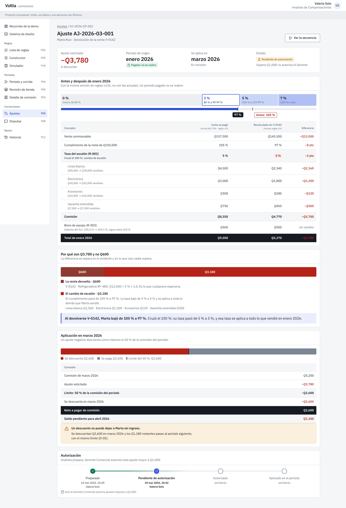
Nadie puede explicar el número
Las comisiones viven en una hoja de cálculo que mantiene una sola persona. Cuando un vendedor reclama, hay que rastrear fórmulas a mano. Y una devolución de hace dos meses se corrige “a ojo”.
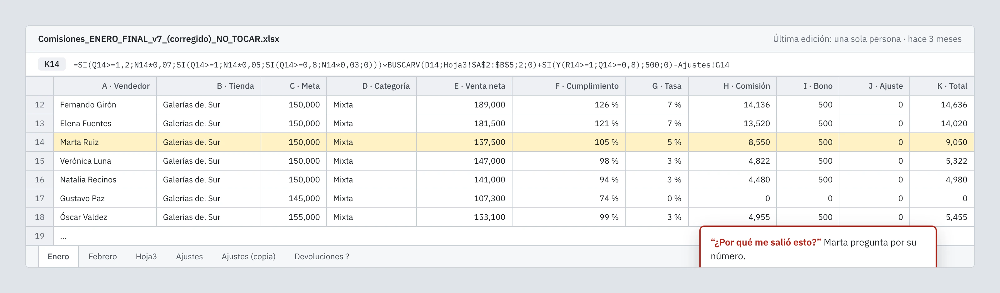
Seis personas, el mismo número, distinto detalle
Cada rol ve la misma verdad con otro nivel de detalle y de permiso. Resolver esa tensión es el centro del diseño.
- Analista de CompensacionesCrea reglas, ejecuta cálculos y prepara ajustes.Le preocupa: equivocarse en una regla y que afecte a 180 personas.
- Jefe de tiendaRevisa los resultados de su tienda y marca observaciones.Le preocupa: que su equipo cobre bien y a tiempo.
- Gerente ComercialAprueba el período y decide las excepciones.Le preocupa: el costo total y el riesgo de aprobar algo mal.
- ContabilidadExporta lo aprobado y lo marca como pagado.Le preocupa: que lo aprobado cuadre con lo que se paga.
- AuditoríaSolo consulta, con el rastro completo.Le preocupa: poder reconstruir cualquier número meses después.
- VendedorConsulta su detalle y abre disputas.Le preocupa: entender cuánto va a ganar y por qué.
El modelo antes que las pantallas
Antes de dibujar, definí las seis reglas y su orden, los estados de cada cosa y quién puede hacer qué. Después lo convertí en un motor con pruebas para que cada cifra se pueda recalcular.
Orden de aplicación de las reglas
- R-006Excluye ventas con más de 25 % de descuento
- R-001Fija la tasa por escalón sobre toda la venta
- R-002Multiplica por categoría
- R-005Marca el tope y lo escala
- R-003Bono de equipo, en segunda pasada
- R-004Corrige períodos pagados con ajustes
Estados de un período
- Abierto
- Cerrado a ventas
- Calculado
- En revisión
- Aprobado
- Pagadono se reabre
Cómo se corrige un período pagado
Configurar reglas sin programar
Un formulario estructurado con una frase de lectura en vivo y una vista previa con un vendedor real. Activar una regla requiere dos personas: el Analista prepara y el Gerente aprueba.
Descarté fórmulas libres (fallan en silencio), editor de nodos (excesivo para seis tipos de regla) y lenguaje natural (ambiguo con dinero). Decisiones D-08 y D-10.
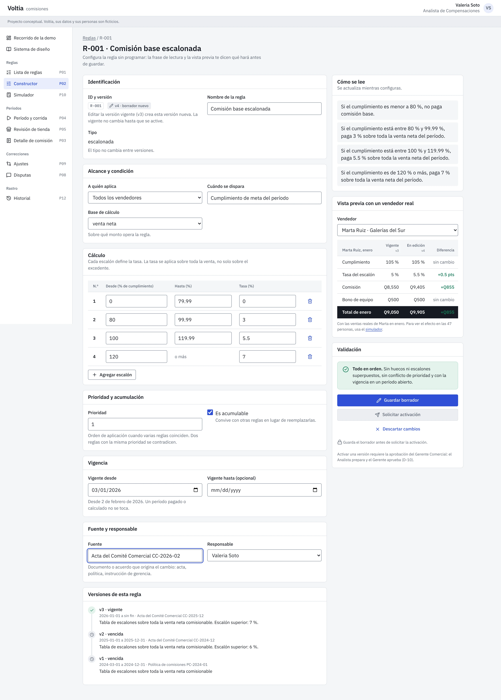
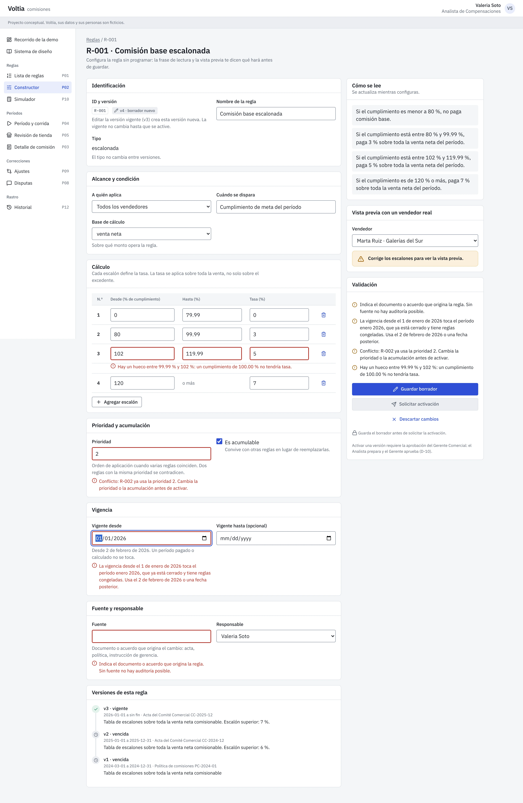
Explicar cualquier número
La barra de cumplimiento dibuja los escalones y dice que la tasa se aplica a todo lo vendido. La cascada va del total vendido a la comisión, regla por regla. Cada cifra se puede pulsar.
Las ventas excluidas se muestran atenuadas, con su motivo, en lugar de ocultarse. Decisiones D-01, D-03 y D-07.
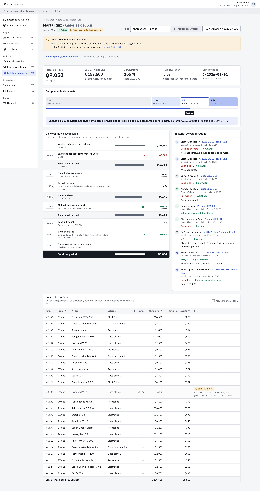
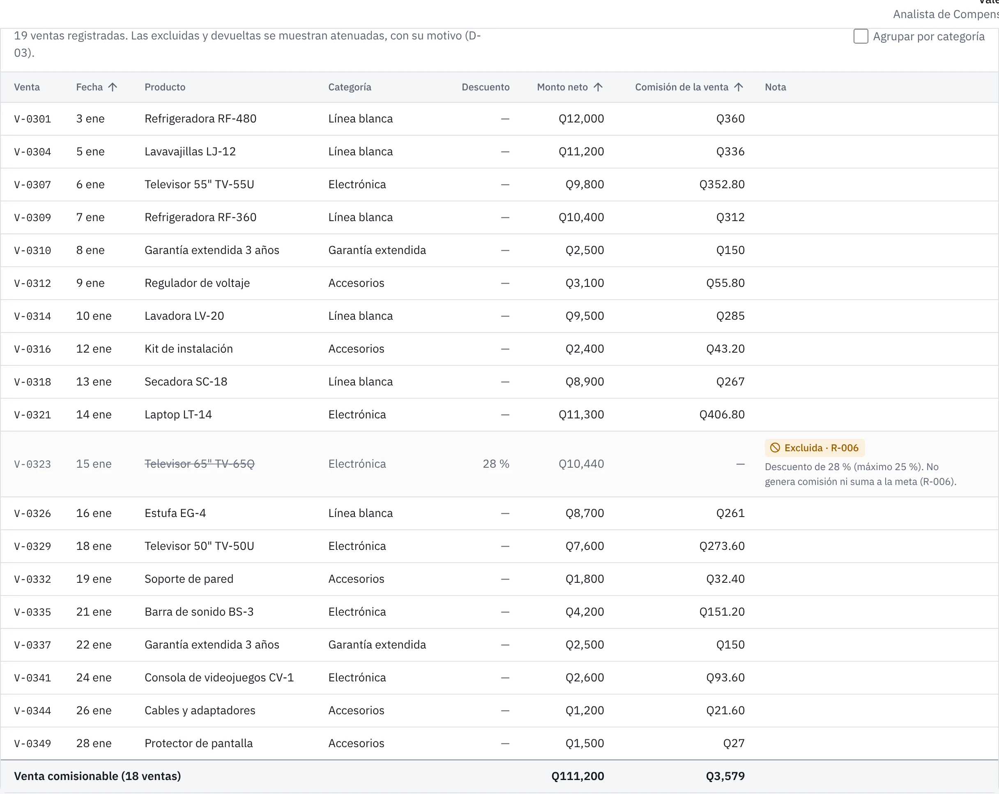
El ciclo del mes, de la corrida al pago
Cada estado tiene un responsable. Un vendedor sin meta queda bloqueado en lugar de cobrar 0 %. El tope no recorta en silencio: escala. Aprobar y pagar son irreversibles y piden confirmación con el impacto.
Una observación bloquea solo a ese vendedor, no a la tienda. Decisiones D-04, D-06 y D-14.
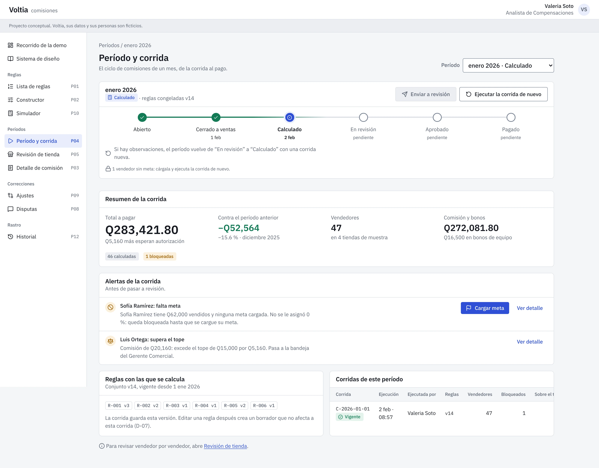
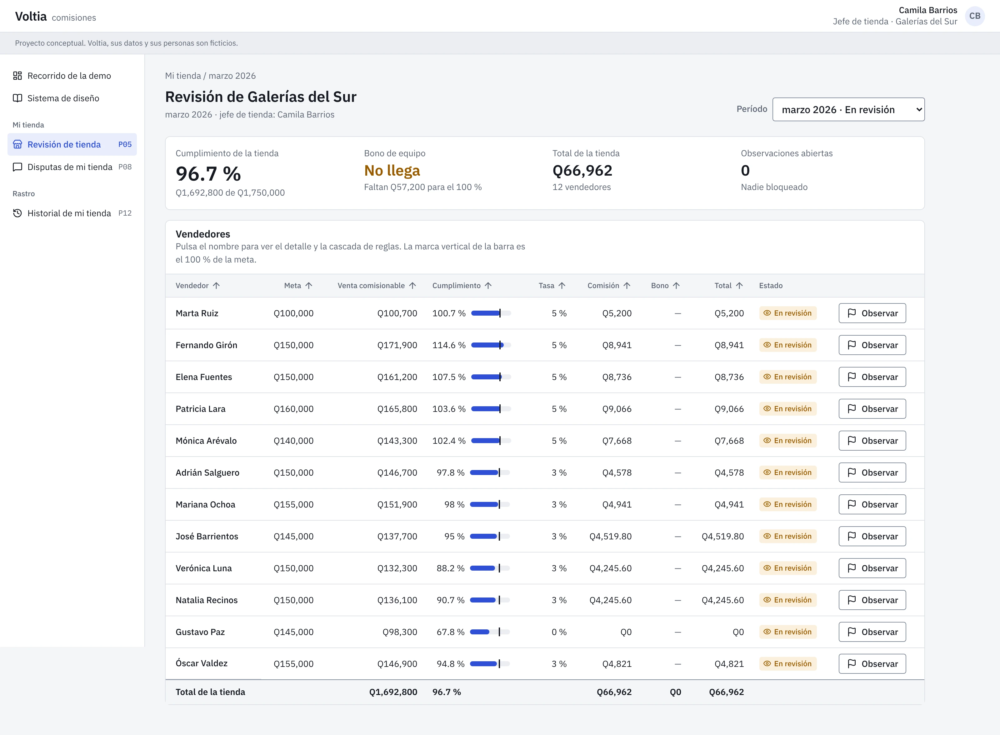
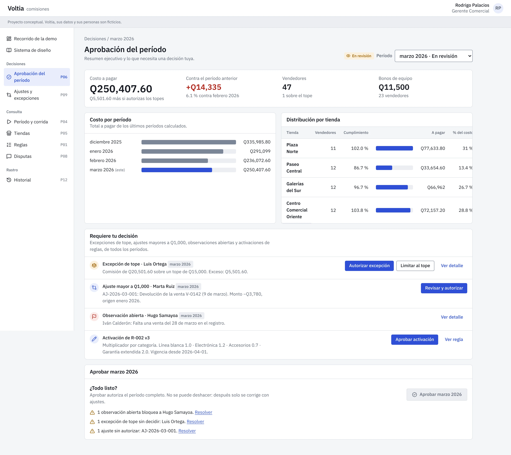
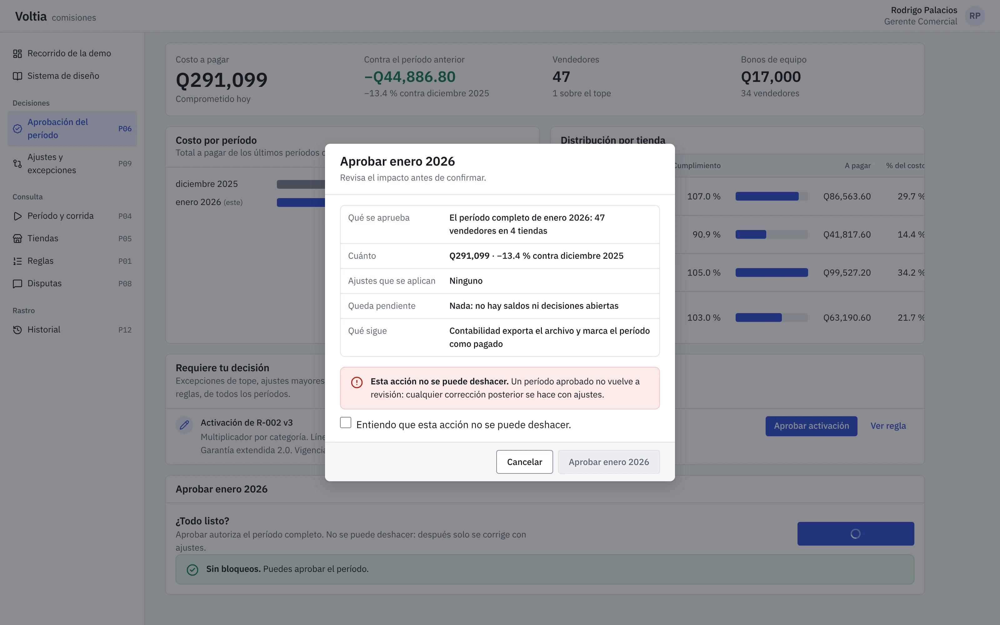
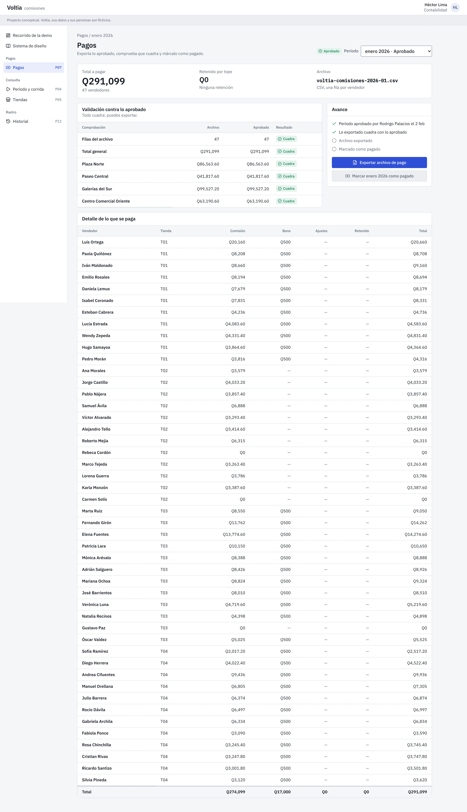
El caso de Marta
Una refrigeradora de Q12,000 le generó Q600. Al devolverse en marzo, su cumplimiento de enero bajó de 105 % a 97 %, y la nueva tasa se aplica a todo lo demás que vendió. La reversión es de Q3,780.
Descarté reabrir enero. Y como el descuento no puede dejarla sin ingreso, en marzo se descuentan Q2,600 y Q1,180 pasan a abril. Decisiones D-02 y D-05.
Antes de cambiar una regla
El simulador usa las ventas reales de un período. Subir el escalón de 100 % de 5 % a 5.5 % cuesta Q13,213.30 en enero, lo ganan 17 personas y nadie cambia de escalón.
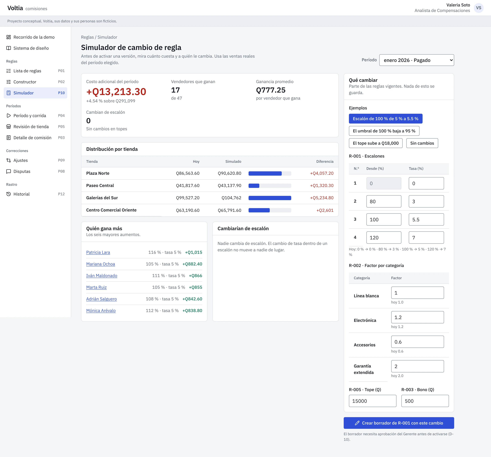
Lo que ve el vendedor
Cuánto va a ganar si sigue así, cuánto le falta para el siguiente escalón y qué significa un ajuste, en lenguaje simple. Ve su resultado cuando está aprobado, no antes.
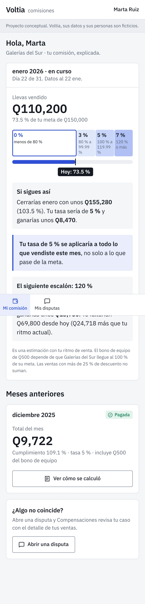
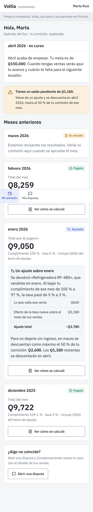
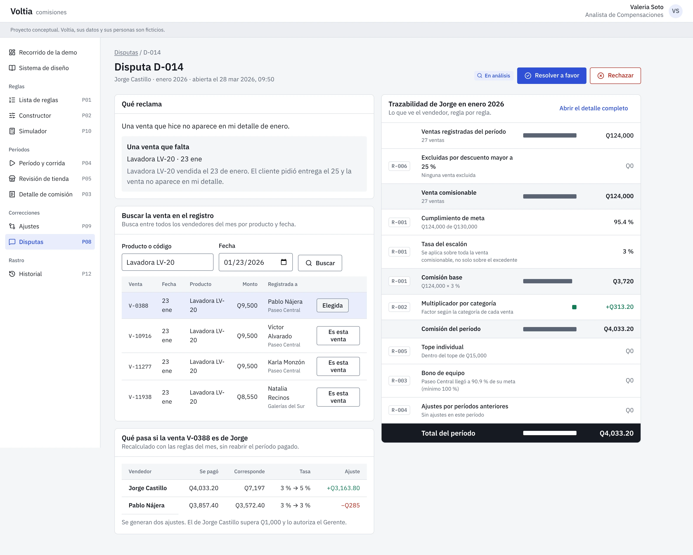
Sistema y entrega a desarrollo
Tokens con contraste AA comprobado, doce componentes con sus variantes y estados, y especificaciones de interacción de P02, P03 y P09. El prototipo es la referencia de comportamiento.
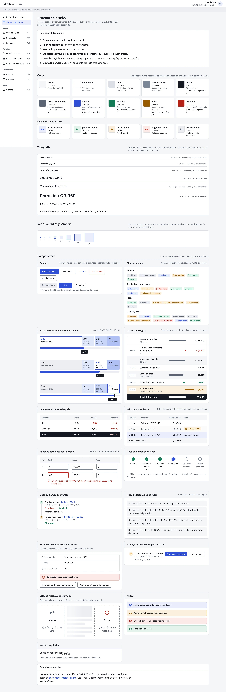
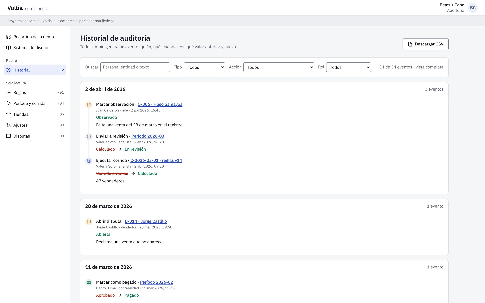
Lo que dejé fuera a propósito
- Un vendedor que cambia de tienda a mitad de mes: cada venta cuenta para la tienda donde se registró y el bono usa la tienda al cierre. Es una simplificación declarada (D-12).
- La liquidación de quien renuncia con saldo pendiente: se menciona, no se diseña.
- Las 14 tiendas: la muestra tiene 4 y 47 vendedores, con totales que cuadran con los del caso.
- Los archivos de Figma: el prototipo en código ocupó su lugar (D-23).
Qué haría después
Validar con analistas y vendedores reales, no con datos de ejemplo. Medir el tiempo que toma resolver un reclamo antes y después. Probar el constructor con alguien que nunca vio las reglas.